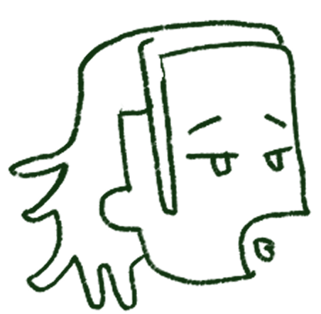
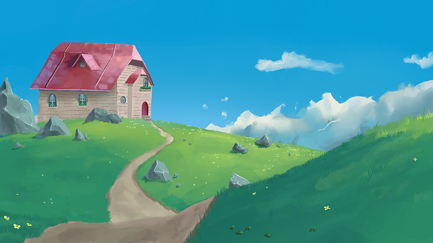

TUCA

*NO LEAF CLOVER*


*No Leaf Clover is an ongoing solo-project. It is a short story which will be fully 2D animated using a mixture of traditional animation and bone animation.


*No Leaf Clover is an ongoing solo-project. It is a short story which will be fully 2D animated using a mixture of traditional animation and bone animation.